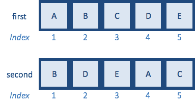

# Create new second vector in a different order
first <- c("A","B","C","D","E")
second <- c("B","D","E","A","C")Using the match() Function Answer Key
Exercise 1
Now that we know how to reorder using indices, let’s try to use it to reorder the contents of one vector to match the contents of another. Let’s create the vectors first and second as detailed below:

- How would you reorder the
secondvector to matchfirst?
# Reordering second vector to match the first vector
second[c(4, 1, 5, 2, 3)][1] "A" "B" "C" "D" "E"Exercise 2
- After talking with your collaborator, it becomes clear that
sample2andsample9were actually from a different mouse background than the other samples and should not be part of our analysis. Create a new variable calledsubset_rpkmthat has these columns removed from therpkm_ordereddata frame.
# Remove samples 2 and 9
subset_rpkm <- rpkm_ordered[ , c(1,3:8,10:12)]Alternatively, you could use:
# Remove samples 2 and 9 alternative
subset_rpkm <- rpkm_ordered[ , -c(2,9)]- Use the
match()function to subset themetadatadata frame so that the row names of themetadatadata frame match the column names of thesubset_rpkmdata frame.
# Use match to reorder metadata
idx <- match(colnames(subset_rpkm), rownames(metadata))
metadata[idx, ] genotype celltype replicate
sample1 Wt typeA 1
sample3 Wt typeA 3
sample4 KO typeA 1
sample5 KO typeA 2
sample6 KO typeA 3
sample7 Wt typeB 1
sample8 Wt typeB 2
sample10 KO typeB 1
sample11 KO typeB 2
sample12 KO typeB 3